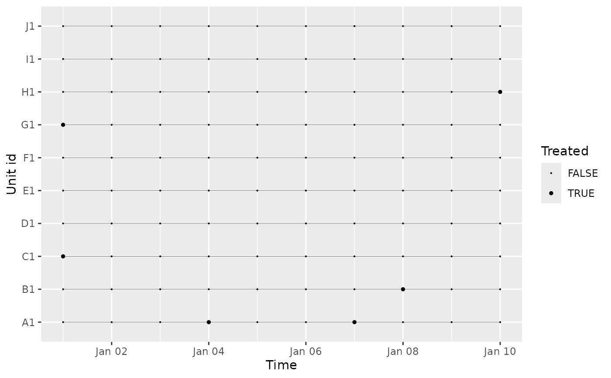
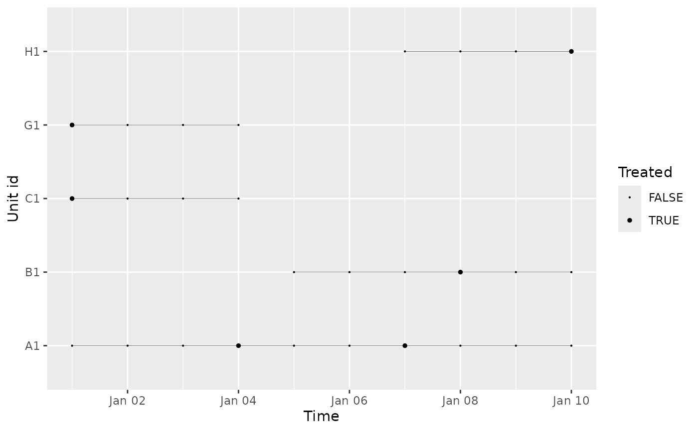
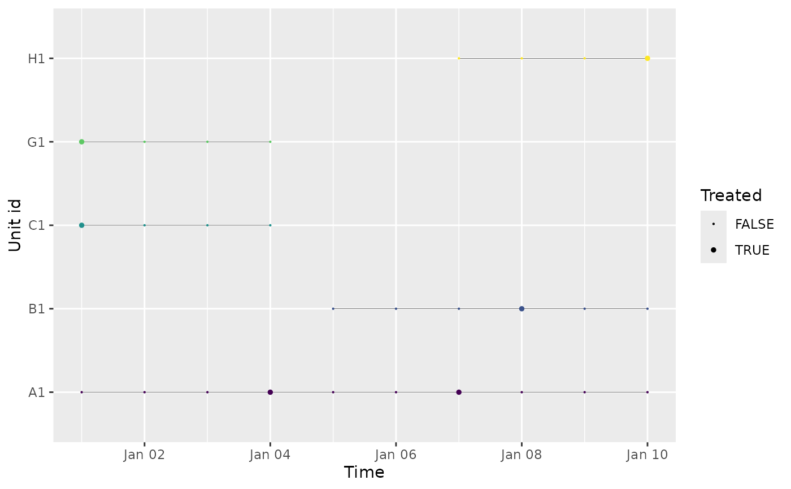

Visualize a panel
Arguments
- data
An object of class data.frame or tibble containing the panel data
- id
A column name containing the unique identifier of the observational unit in the panel (the i dimension)
- time
A column name containing the time variable in the panel (i.e. the t dimension)
- treatment
A column name containing the name of the dummy variable indicating whether unit i is treated at time t
- prepped
A boolean specifying if the panel has already been prepared through this package (i.e. the treatment_ids have been created and modified). If so, the points will be colored based on treatment id.
Examples
# Load packages
library(tidyr)
library(dplyr)
library(EventHorizon)
panel <- simulate_panel(n_units = 10, n_periods = 10)
visualize_panel(panel)

event_horizon_panel <- panel |>
mutate(treatment_id = treatment_ids(id = id,
time = time,
treatment = treatment,
window = 3),
relative_time = calculate_relative_time(id = id,
time = time,
treatment_id = treatment_id,
window = 3),
treatment_id = propagate_treatment_id(id = id,
time = time,
treatment_id = treatment_id,
window = 3)) |>
drop_na(treatment_id)
visualize_panel(event_horizon_panel)

visualize_panel(event_horizon_panel, prepped = TRUE)
